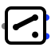

Two-Way Switch| Library: | Input/Output-Extra |
Behavior
Models a manually operated changeover switch. A newly placed component selects its first branch. Clicking it alternates between the first and second branches.
Pins
The pin directions depend on the Switch Mode
attribute.
- 1 Input → 2 Outputs
- The common input is passed to the selected output. The unselected output is unknown.
- 2 Inputs → 1 Output
- The selected input is passed to the common output.
All three pins use the width selected by Data Bits
.
Attributes
- Switch Mode
- Selects 1 Input → 2 Outputs or 2 Inputs → 1 Output.
- Facing
- The direction from the common pin toward the pair of branch pins.
- Data Bits
- The bit width of all three pins.
- Color
- The color used to fill the switch body; the default white leaves it transparent.
- Label
- The text associated with the component.
- Label Location
- The location of the label relative to the component.
- Label Font
- The font used to draw the label.
Poke Tool Behavior
Click the switch to select the other branch.
Text Tool Behavior
Allows the label associated with the component to be edited.